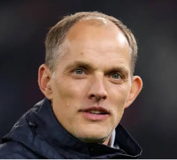

Hello, world!
This is my first website hosted on GitHub Pages.
News
News
Sport

Tuchel’s England March Into the World Cup With New Identity
London — Thomas Tuchel has officially taken charge of England’s national team, and the Three Lions are heading into the World Cup with a completely transformed identity. After months of speculation, tactical debates, and questions about whether the former Chelsea and Bayern Munich manager could adapt to international football, Tuchel has delivered a clear message: England will play on the front foot.
Tuchel’s arrival has brought a level of intensity and structure England fans haven’t seen in years. Training sessions have been described as “relentless,” with players pushed to operate in tight spaces, recycle possession quickly, and press with coordinated aggression. Several squad members have privately admitted that Tuchel’s tactical detail is “unlike anything they’ve experienced at international level.”
The biggest shift has been England’s shape. Tuchel has implemented a flexible 3‑4‑3 system, allowing England to dominate transitions while giving creative freedom to attacking stars like Jude Bellingham and Phil Foden. Harry Kane, now operating as a deeper link‑man, has praised Tuchel’s approach, saying the team “finally feels like it has a clear plan in every phase of play.”
England’s warm‑up matches have shown glimpses of Tuchel’s trademark patterns: wing‑backs pushing high, centre‑backs stepping into midfield, and rapid switches of play designed to unbalance opponents. Critics who once questioned whether Tuchel’s style could translate to international tournaments are now reconsidering.
As the World Cup approaches, expectations are rising. England’s fanbase — often divided, often anxious — suddenly feels united behind a manager who has already won the Champions League and rebuilt squads under pressure. Tuchel’s calm authority on the touchline, combined with his tactical ruthlessness, has given England a new sense of purpose.
Whether this new‑look England can go all the way remains to be seen, but one thing is clear: under Thomas Tuchel, the Three Lions are no longer playing catch‑up. They’re setting the pace.